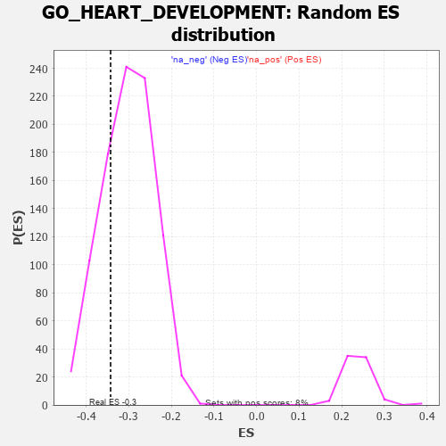

| | | Dataset | 7d |
| Phenotype | NoPhenotypeAvailable |
| Upregulated in class | na_neg |
| GeneSet | GO_HEART_DEVELOPMENT |
| Enrichment Score (ES) | -0.34277645 |
| Normalized Enrichment Score (NES) | -1.1336085 |
| Nominal p-value | 0.2535211 |
| FDR q-value | 0.7231723 |
| FWER p-Value | 1.0 |
Table: GSEA Results Summary
 Fig 1: Enrichment plot: GO_HEART_DEVELOPMENT
Fig 1: Enrichment plot: GO_HEART_DEVELOPMENT
Profile of the Running ES Score & Positions of GeneSet Members on the Rank Ordered List
| PROBE | GENE SYMBOL | GENE_TITLE | RANK IN GENE LIST | RANK METRIC SCORE | RUNNING ES | CORE ENRICHMENT | | 1 | CSRP3 | | | 161 | 1.186 | -0.0037 | No |
| 2 | FOXF1 | | | 176 | 1.136 | 0.0107 | No |
| 3 | WNT16 | | | 198 | 1.072 | 0.0233 | No |
| 4 | LBX1 | | | 254 | 0.929 | 0.0294 | No |
| 5 | TBX20 | | | 267 | 0.880 | 0.0404 | No |
| 6 | SHOX2 | | | 288 | 0.842 | 0.0498 | No |
| 7 | DLL1 | | | 337 | 0.760 | 0.0545 | No |
| 8 | GSK3A | | | 351 | 0.745 | 0.0635 | No |
| 9 | AXIN2 | | | 383 | 0.713 | 0.0696 | No |
| 10 | SUFU | | | 443 | 0.665 | 0.0715 | No |
| 11 | SRF | | | 542 | 0.615 | 0.0678 | No |
| 12 | JMJD6 | | | 553 | 0.613 | 0.0752 | No |
| 13 | CCNB1 | | | 581 | 0.601 | 0.0803 | No |
| 14 | SMG9 | | | 643 | 0.579 | 0.0807 | No |
| 15 | ID1 | | | 719 | 0.555 | 0.0791 | No |
| 16 | ZIC3 | | | 760 | 0.542 | 0.0817 | No |
| 17 | MATR3 | | | 937 | 0.498 | 0.0663 | No |
| 18 | PDCD4 | | | 941 | 0.497 | 0.0729 | No |
| 19 | YAP1 | | | 1041 | 0.475 | 0.0671 | No |
| 20 | MEF2C | | | 1054 | 0.473 | 0.0723 | No |
| 21 | RBM15 | | | 1057 | 0.473 | 0.0787 | No |
| 22 | SOS1 | | | 1547 | 0.384 | 0.0217 | No |
| 23 | FZD1 | | | 1574 | 0.379 | 0.0238 | No |
| 24 | NPRL3 | | | 1592 | 0.375 | 0.0270 | No |
| 25 | RXRA | | | 1647 | 0.365 | 0.0253 | No |
| 26 | MEIS1 | | | 1723 | 0.351 | 0.0207 | No |
| 27 | GATA4 | | | 1837 | 0.330 | 0.0109 | No |
| 28 | SMAD4 | | | 1860 | 0.326 | 0.0128 | No |
| 29 | RAF1 | | | 2011 | 0.303 | -0.0021 | No |
| 30 | BMP7 | | | 2107 | 0.290 | -0.0101 | No |
| 31 | TCF25 | | | 2213 | 0.275 | -0.0196 | No |
| 32 | CREB1 | | | 2243 | 0.269 | -0.0195 | No |
| 33 | REST | | | 2308 | 0.259 | -0.0240 | No |
| 34 | UBE4B | | | 2313 | 0.258 | -0.0208 | No |
| 35 | KAT2B | | | 2502 | 0.226 | -0.0416 | No |
| 36 | SALL4 | | | 2523 | 0.223 | -0.0410 | No |
| 37 | MBD3 | | | 2524 | 0.223 | -0.0378 | No |
| 38 | ARID2 | | | 2664 | 0.204 | -0.0527 | No |
| 39 | KDM6A | | | 2690 | 0.200 | -0.0530 | No |
| 40 | SLIT2 | | | 2724 | 0.195 | -0.0545 | No |
| 41 | NSD2 | | | 2784 | 0.185 | -0.0594 | No |
| 42 | FGFR2 | | | 2895 | 0.167 | -0.0710 | No |
| 43 | ACVR1 | | | 2932 | 0.161 | -0.0733 | No |
| 44 | TAZ | | | 2933 | 0.161 | -0.0710 | No |
| 45 | PCSK5 | | | 2983 | 0.152 | -0.0751 | No |
| 46 | SMYD1 | | | 2998 | 0.150 | -0.0748 | No |
| 47 | COX17 | | | 3019 | 0.147 | -0.0753 | No |
| 48 | SNX17 | | | 3272 | 0.110 | -0.1059 | No |
| 49 | CTDP1 | | | 3279 | 0.109 | -0.1051 | No |
| 50 | SMAD3 | | | 3303 | 0.105 | -0.1066 | No |
| 51 | PARP2 | | | 3316 | 0.103 | -0.1066 | No |
| 52 | SMAD1 | | | 3337 | 0.099 | -0.1078 | No |
| 53 | TAB1 | | | 3351 | 0.097 | -0.1081 | No |
| 54 | SMAD7 | | | 3369 | 0.093 | -0.1089 | No |
| 55 | MED1 | | | 3405 | 0.089 | -0.1121 | No |
| 56 | GLI1 | | | 3489 | 0.079 | -0.1216 | No |
| 57 | PIN1 | | | 3543 | 0.069 | -0.1274 | No |
| 58 | MAPK3 | | | 3589 | 0.062 | -0.1322 | No |
| 59 | DCTN5 | | | 3665 | 0.049 | -0.1411 | No |
| 60 | NF1 | | | 3713 | 0.040 | -0.1466 | No |
| 61 | XIRP2 | | | 3854 | 0.020 | -0.1642 | No |
| 62 | NIPBL | | | 3900 | 0.010 | -0.1698 | No |
| 63 | CCM2 | | | 3933 | 0.005 | -0.1738 | No |
| 64 | EYA1 | | | 3987 | -0.006 | -0.1805 | No |
| 65 | ATG5 | | | 4051 | -0.016 | -0.1883 | No |
| 66 | SFRP2 | | | 4065 | -0.018 | -0.1897 | No |
| 67 | ROBO2 | | | 4066 | -0.018 | -0.1894 | No |
| 68 | WNT2 | | | 4084 | -0.021 | -0.1913 | No |
| 69 | MTOR | | | 4114 | -0.025 | -0.1947 | No |
| 70 | PLCE1 | | | 4127 | -0.028 | -0.1958 | No |
| 71 | AP2B1 | | | 4185 | -0.039 | -0.2025 | No |
| 72 | FHL2 | | | 4222 | -0.046 | -0.2065 | No |
| 73 | WDR11 | | | 4262 | -0.052 | -0.2107 | No |
| 74 | WNT11 | | | 4282 | -0.056 | -0.2123 | No |
| 75 | TBX2 | | | 4303 | -0.060 | -0.2140 | No |
| 76 | SETD2 | | | 4443 | -0.084 | -0.2306 | No |
| 77 | MEF2A | | | 4499 | -0.095 | -0.2363 | No |
| 78 | ILK | | | 4510 | -0.096 | -0.2362 | No |
| 79 | GATA3 | | | 4614 | -0.120 | -0.2476 | No |
| 80 | PTK7 | | | 4687 | -0.136 | -0.2549 | No |
| 81 | PIM1 | | | 4776 | -0.152 | -0.2639 | No |
| 82 | RTN4 | | | 4783 | -0.154 | -0.2625 | No |
| 83 | SLIT3 | | | 4890 | -0.175 | -0.2736 | No |
| 84 | EP300 | | | 4941 | -0.186 | -0.2773 | No |
| 85 | PRKDC | | | 4955 | -0.189 | -0.2763 | No |
| 86 | NEK8 | | | 5071 | -0.217 | -0.2879 | No |
| 87 | TBX1 | | | 5166 | -0.241 | -0.2965 | No |
| 88 | PARVA | | | 5187 | -0.245 | -0.2955 | No |
| 89 | SMO | | | 5195 | -0.247 | -0.2929 | No |
| 90 | ATM | | | 5210 | -0.249 | -0.2912 | No |
| 91 | PTEN | | | 5262 | -0.261 | -0.2940 | No |
| 92 | CDK1 | | | 5264 | -0.262 | -0.2904 | No |
| 93 | NPY2R | | | 5331 | -0.281 | -0.2948 | No |
| 94 | STIL | | | 5483 | -0.314 | -0.3096 | No |
| 95 | FGFR1 | | | 5543 | -0.332 | -0.3124 | No |
| 96 | SMYD2 | | | 5598 | -0.344 | -0.3144 | No |
| 97 | G6PD | | | 5638 | -0.358 | -0.3143 | No |
| 98 | BBS4 | | | 5806 | -0.407 | -0.3299 | No |
| 99 | BBS5 | | | 5862 | -0.421 | -0.3309 | No |
| 100 | PRDM1 | | | 5956 | -0.457 | -0.3363 | Yes |
| 101 | ACTN2 | | | 5960 | -0.458 | -0.3301 | Yes |
| 102 | JAG1 | | | 6060 | -0.494 | -0.3358 | Yes |
| 103 | CALR | | | 6077 | -0.499 | -0.3307 | Yes |
| 104 | FBN1 | | | 6080 | -0.499 | -0.3239 | Yes |
| 105 | STK4 | | | 6145 | -0.518 | -0.3247 | Yes |
| 106 | ROCK1 | | | 6152 | -0.520 | -0.3180 | Yes |
| 107 | INSR | | | 6204 | -0.538 | -0.3169 | Yes |
| 108 | SMAD2 | | | 6216 | -0.541 | -0.3106 | Yes |
| 109 | TPM1 | | | 6226 | -0.545 | -0.3040 | Yes |
| 110 | CDC42 | | | 6236 | -0.548 | -0.2974 | Yes |
| 111 | DRC1 | | | 6278 | -0.565 | -0.2946 | Yes |
| 112 | IFT52 | | | 6280 | -0.566 | -0.2866 | Yes |
| 113 | IFT57 | | | 6307 | -0.579 | -0.2817 | Yes |
| 114 | CDKL1 | | | 6388 | -0.610 | -0.2833 | Yes |
| 115 | ROBO1 | | | 6577 | -0.699 | -0.2973 | Yes |
| 116 | MKS1 | | | 6607 | -0.715 | -0.2909 | Yes |
| 117 | TMED2 | | | 6665 | -0.746 | -0.2876 | Yes |
| 118 | PAK1 | | | 6691 | -0.757 | -0.2800 | Yes |
| 119 | EGFR | | | 6708 | -0.765 | -0.2712 | Yes |
| 120 | NPY1R | | | 6732 | -0.776 | -0.2631 | Yes |
| 121 | C2CD3 | | | 6783 | -0.802 | -0.2580 | Yes |
| 122 | FHOD3 | | | 6835 | -0.834 | -0.2527 | Yes |
| 123 | AHI1 | | | 6860 | -0.848 | -0.2437 | Yes |
| 124 | CBY1 | | | 6874 | -0.851 | -0.2333 | Yes |
| 125 | MYH11 | | | 6905 | -0.870 | -0.2247 | Yes |
| 126 | MIB1 | | | 6932 | -0.890 | -0.2154 | Yes |
| 127 | FAT4 | | | 6948 | -0.901 | -0.2045 | Yes |
| 128 | PDE2A | | | 6985 | -0.927 | -0.1959 | Yes |
| 129 | MYH10 | | | 7048 | -0.966 | -0.1901 | Yes |
| 130 | BBS7 | | | 7089 | -0.988 | -0.1811 | Yes |
| 131 | LDB3 | | | 7119 | -1.008 | -0.1705 | Yes |
| 132 | OVOL2 | | | 7197 | -1.068 | -0.1651 | Yes |
| 133 | IFT74 | | | 7211 | -1.085 | -0.1514 | Yes |
| 134 | ANK2 | | | 7298 | -1.170 | -0.1457 | Yes |
| 135 | MSX2 | | | 7299 | -1.171 | -0.1291 | Yes |
| 136 | ARMC4 | | | 7311 | -1.181 | -0.1137 | Yes |
| 137 | PKD1 | | | 7628 | -1.611 | -0.1311 | Yes |
| 138 | CASP3 | | | 7747 | -1.902 | -0.1191 | Yes |
| 139 | PKD2 | | | 7822 | -2.167 | -0.0978 | Yes |
| 140 | ECE1 | | | 7867 | -2.498 | -0.0679 | Yes |
| 141 | CAV3 | | | 7896 | -2.739 | -0.0325 | Yes |
| 142 | PI16 | | | 7914 | -2.948 | 0.0073 | Yes |
Table: GSEA details [plain text format]

Fig 2: GO_HEART_DEVELOPMENT: Random ES distribution
Gene set null distribution of ES for GO_HEART_DEVELOPMENT